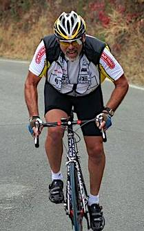

Week 1 Results: Montebello
14 Oct 2006
|
2006 Low-Key Hillclimbs Week 1 Results: Montebello 14 Oct 2006 |
|  |
| Dick Robinson rages up Montebello! photo by Sheri Greenspan |
"Perfect climbing weather" was an apt description of the conditions up Montebello today. Temperatures dropping to 52F by the summit, with overcast skies, proved ideal for the efforts required by Montebello's demanding slopes.
An early pack of enthusiastic climbers took off at a brutal pace on the early, steep portion of the climb. Tracy Colwell proved to be the only one of the crew who was able to sustain it, however, taking yet another Montebello W with his time of 26:42, and establishing himself as the man to beat for this year's male overall.
It was a light turn out among the women (recruit! recruit!). Top on the day was Ingrid Erkman, who took the week's top points with her time of 38:47.
In the team competition, WAV-ARA moves into the lead, followed by Webcor/Alto Velo, San Jose Bike Club, and Pen Velo/Kondra. With the modest turn-out in this first week, there's nothing but opportunity for some teams to gel and move to the front of the team standings.
Next up: OLH. Be there. Bring your friends. Bring your friends' friends...
Thanks to help from Carola Berger, Fred Butts, Sheri Greenspan, and Leo Menestrina for making today's climb possible!median time = 34:59
pl # rider team category time score 1 51 Tracy Colwell Team Colwell 2 26:42 131.02 2 43 Scott Frake WAV-ARA Bald 27:47 125.91 3 19 Menso de Jong Santa Cruz Syndicate Junior 28:57 120.84 4 1 Dan Connelly TNT 3 29:07 120.15 5 39 Clark Foy San Jose Bike Club 40+ 29:22 119.13 6 48 David Kelly Webcor/Alto Velo 4 29:31 118.52 7 37 Bill Lloyd Le Matin 1 29:33 118.39 8 17 Brian Edwards Hell Riders 25-29 29:34 118.32 9 20 James Porter Western Wheelers Out Of Shape Dads 30:23 115.14 10 36 Bill Davis Webcor/Alto Velo 4 30:25 115.01 11 45 Rupert Brauch WAV-ARA 3 30:29 114.76 12 42 Rob McNeill WAV-ARA 2 30:45 113.77 13 16 Peter Mehlitz 45+ 32:13 108.59 14 18 Jeff Loufit 45+ 33:00 106.01 15 4 Fred E. Stamm Pen Velo/Kondra 50+ 33:00 106.01 16 40 Geo Kitta Pen Velo/Kondra 50+ 33:26 104.64 17 35 Ron Brunner Commuter Commuter 34:07 102.54 18 6 Greg Dougald AV: Old Guys Finish 40+ 34:53 100.29 19 14 Chris Barnes Stanford Almuni 30+ 35:05 99.71 20 21 Pete Heller AV: Old Guys Finish 50+ 35:14 99.29 21 44 Brian Peterson WAV-ARA 2 36:13 96.59 22 11 Peter Merril Adobe 50+ 36:39 95.45 23 12 Craig Baker San Jose Bike Club 40+ 37:04 94.38 24 47 Gavin McRaley Webcor/Alto Velo 4 37:37 93.00 25 50 Francis Cebedo RoadBikeReview 5 37:54 92.30 26 46 Ken Chern Pen Velo/Kondra 4 38:16 91.42 27 9 Ken Straub Team Bikeaholics Older Than You 38:28 90.94 28 22 Tom Lawrence Team Bikeaholics 35+ 38:33 90.75 29 34 Stephen Fong San Jose Bike Club 5 39:21 88.90 30 33 Brian Birkeland ACTC 40+ 43:16 80.86 31 15 Rich Brunner Cruzie 39ish 43:55 79.66 32 10 Dick Robinson TNT 59+ 46:03 75.97 33 49 Adam Tow Blubber Busters Infinity 48:54 71.54 34 8 Craig Swarthout Old 51 52:14 66.98 35 38 Neil Bliss Platypus Racing Heavyweight 53:04 65.92 36 52 Stephen Morris Zero 0 66:01 52.99
median time = 39:56
pl # rider team category time score 1 5 Ingrid Erkman TNT OOSOL 38:47 102.99 2 7 Cheryl Hennessy Velo Bella 35+ 41:06 97.18
pl team score scoring 1 WAV-ARA 354.44 (Scott Frake, Rupert Brauch, Rob McNeill) 2 Webcor/Alto Velo 326.53 (David Kelly, Bill Davis, Gavin McRaley) 3 San Jose Bike Club 302.41 (Clark Foy, Craig Baker, Stephen Fong) 4 Pen Velo/Kondra 302.07 (Fred E. Stamm, Geo Kitta, Ken Chern) 5 TNT 299.10 (Dan Connelly, Ingrid Erkman, Dick Robinson) 6 AV: Old Guys Finish 199.58 (Greg Dougald, Pete Heller) 7 Team Bikeaholics 181.69 (Ken Straub, Tom Lawrence) 8 Team Colwell 131.02 (Tracy Colwell) 9 Santa Cruz Syndicate 120.84 (Menso de Jong) 10 Le Matin 118.39 (Bill Lloyd) 11 Hell Riders 118.32 (Brian Edwards) 12 Western Wheelers 115.14 (James Porter) 13 Commuter 102.54 (Ron Brunner) 14 Stanford Almuni 99.71 (Chris Barnes) 15 Velo Bella 97.18 (Cheryl Hennessy) 16 Adobe 95.45 (Peter Merril) 17 RoadBikeReview 92.30 (Francis Cebedo) 18 ACTC 80.86 (Brian Birkeland) 19 Cruzie 79.66 (Rich Brunner) 20 Blubber Busters 71.54 (Adam Tow) 21 Platypus Racing 65.92 (Neil Bliss) 22 Zero 52.99 (Stephen Morris)